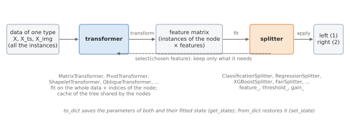
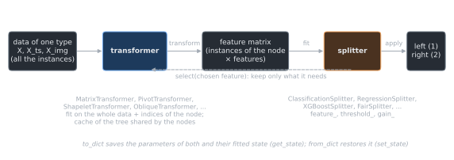

Extending the library#
New kinds of splits are added to RuleTree by writing new stumps. This guide shows how a stump is
made, and how to write its two components, the transformer and the splitter, with the
interfaces of RuleTree.base.
How a stump is made#
A tree is built node by node: at each node, it fits a stump on the instances of the node, and the
stump sends each instance to the left or to the right child. Most stumps of the library are a
Stump, the composition of two components:
a transformer (
RuleTreeBaseTransformer) turns the data of one type (tabular data, time series, images, …) into a feature matrix: the columns of the data, the distances from some pivots, the distances from some shapelets, …;a splitter (
RuleTreeBaseSplitter) finds the best split of that matrix: a threshold on a numerical feature (x <= thresholdgoes left) or a value of a categorical feature (x == valuegoes left).




A Stump. fit fits the transformer on the data of one type and
the splitter on the feature matrix of the instances of the node; then select lets the
transformer keep only what the chosen feature needs (e.g. one pivot).#
The two are independent, so any transformer can be combined with any splitter:
from RuleTree import RuleTreeClassifier, RuleTreeRegressor
from RuleTree.stumps.Stump import Stump
from RuleTree.stumps.splitters import ClassificationSplitter, RegressionSplitter
from RuleTree.stumps.transformers import MatrixTransformer
decision_tree_stump = Stump(MatrixTransformer(), ClassificationSplitter(criterion="gini"))
The library provides these components:
Transformer |
Features |
|---|---|
the columns of the data (time series and images are flattened) |
|
the distances from the pivots of the node |
|
the distances from partial pivots, restricted to a few features |
|
the distances from shapelets |
|
linear combinations of a few features (oblique directions); both derive from
|
|
for each pair of shapelets (partial pivots), whether the instance is closer to the second one |
|
for each pair of pivots, whether the instance is closer to the second one |
|
linear combinations of the distances from the pivots of the node |
|
Splitter |
Split |
the split of a scikit-learn decision tree of depth 1 |
|
the split with the highest XGBoost gain |
|
the best split whose children are fair with respect to some sensitive features |
A new stump therefore needs only the component that is new: a transformer, to split on new features; a splitter, to choose the splits in a new way.
A transformer without fitted state#
The simplest transformer computes the features from each instance alone: it defines only
transform. This one summarizes each time series with four statistics:
import numpy as np
from RuleTree.base.RuleTreeBaseTransformer import RuleTreeBaseTransformer
from RuleTree.utils.define import DATA_TYPE_TS
class SummaryTransformer(RuleTreeBaseTransformer):
"""Summary statistics of each time series."""
supported_data_types = (DATA_TYPE_TS,)
statistics = {"mean": np.mean, "std": np.std, "min": np.min, "max": np.max}
def transform(self, X, context=None, node_id=None, cache=None):
return np.column_stack([f(X[:, 0, :], axis=1) for f in self.statistics.values()])
def feature_id(self, feature):
return list(self.statistics)[feature]
supported_data_typeslists the data types the transformer accepts (by default, only tabular data); the stump supports the same types. HereXhas shape (n_samples, n_signals, length).transformreturns a 2D feature matrix. The numerical and categorical columns are inferred from it.feature_id(optional) gives the identifier of a column in the rules: an integeriis shown asX_i, a string as it is.
Combined with a splitter, the transformer is a stump that any tree can use. The time series of the example belong to two classes with different levels:
rng = np.random.default_rng(0)
y_ts = rng.integers(0, 2, size=100)
X_ts = rng.normal(scale=0.5, size=(100, 1, 30)) + 2 * y_ts[:, None, None]
model = RuleTreeClassifier(max_depth=2, random_state=0, base_stumps=Stump(SummaryTransformer(), ClassificationSplitter()))
model.fit(X_ts=X_ts, y=y_ts)
model.print_rules(model.get_rules())
|--- max <= 2.099
| output: 0
|--- max > 2.099
| output: 1
A transformer with fitted state#
A transformer that learns something from the data (pivots, shapelets, …) also defines fit.
This one draws random projections of the tabular data at each node:
class RandomProjectionTransformer(RuleTreeBaseTransformer):
"""Random projections of the tabular data, drawn at each node."""
def __init__(self, n_projections=10, random_state=None):
self.n_projections = n_projections
self.random_state = random_state
def fit(self, X, y, idx=None, data_type=None, sample_weight=None, *, context, node_id, cache):
rng = np.random.default_rng(self.random_state)
self.directions_ = rng.normal(size=(X.shape[1], self.n_projections))
self.numerical_, self.categorical_ = list(range(self.n_projections)), []
return self
def transform(self, X, context=None, node_id=None, cache=None):
return X @ self.directions_
def select(self, feature):
self.directions_ = self.directions_[:, [feature]]
return 0
def feature_id(self, feature):
return "projection(" + ", ".join(f"{w:.2f}" for w in self.directions_[:, feature]) + ")"
def get_state(self):
return {"directions": self.directions_.tolist()}
def set_state(self, state):
self.directions_ = np.array(state["directions"])
return self
The parameters are the arguments of
__init__, stored with the same names, as in any scikit-learn estimator. Arandom_stateparameter left to None receives the one of the tree.fitreceives the data of all the instances (X,y) and the indices of the instances in the node (idx, None for all of them); it setsnumerical_andcategorical_, the indices of the numerical and categorical columns of the feature matrix.contextandnode_idare the tree and the node being split (see Using the tree and the node), andcacheis the cache of the tree: everyfitrequires the three, as keyword arguments, also when it does not use them (outside a tree they are None). Values that are the same for every node (e.g. the distances between all the instances) can be computed once and stored in the cache; the component decides how: the ones of the library useself._get_cache(cache), a dictionary shared by the transformers of the same class with the same hyperparameters (see Growing and updating trees).transformalso acceptscontext,node_idandcache, optional: the tree passes them when it predicts.select(optional) is called after the splitter has chosen a column: the transformer keeps only what that column needs and returns its new index. Here, a single projection is kept. A transformer whoseselectchanges the feature matrix in other ways setsrefit_after_select = True, so that the splitter is fitted again on the new matrix.get_stateandset_statesave and restore the fitted state, as a JSON-friendly dictionary, when the tree is saved (see Saving and loading trees).
from sklearn.datasets import load_diabetes
X, y = load_diabetes(return_X_y=True)
model = RuleTreeRegressor(max_depth=2, random_state=0,
base_stumps=Stump(RandomProjectionTransformer(n_projections=5), RegressionSplitter()))
model.fit(X, y)
print(model.root.stump.get_rule(float_precision=2)["textual_rule"])
projection(0.13, 0.36, -0.62, -0.73, -0.13, 0.09, -1.01, 0.36, -1.26, -0.31) <= -0.05
A splitter defined by a gain#
The simplest splitter derives from
RuleTreeBaseGainSplitter: it defines its task
(classification or regression) and the gain of a split, and the base class tests every candidate
split (the thresholds between consecutive values of each numerical feature, the values of each
categorical feature) and keeps the one with the highest gain. This one minimizes the number of
errors of the majority classes of the two children:
from RuleTree.base.RuleTreeBaseGainSplitter import RuleTreeBaseGainSplitter
from RuleTree.utils.define import MODEL_TYPE_CLF
class MisclassificationSplitter(RuleTreeBaseGainSplitter):
"""Split minimizing the number of errors of the majority classes of the two sides."""
task = MODEL_TYPE_CLF
def __init__(self, min_samples_leaf=1):
self.min_samples_leaf = min_samples_leaf
def gain(self, y, left, sample_weight=None):
def errors(labels):
return len(labels) - np.unique(labels, return_counts=True)[1].max()
return errors(y) - errors(y[left]) - errors(y[~left])
left is the boolean mask of the instances that go to the left child. min_samples_leaf,
the minimum number of instances on each side, is used by the base class. The search is
exhaustive, so this interface is meant for experiments on small data sets.
from sklearn.datasets import load_iris
iris = load_iris()
model = RuleTreeClassifier(max_depth=2, random_state=0, base_stumps=Stump(MatrixTransformer(), MisclassificationSplitter()))
model.fit(iris.data, iris.target)
print(model.get_rules()["textual_rule"])
print("accuracy:", round(model.score(iris.data, iris.target), 3))
X_2 <= 2.45
accuracy: 0.96
A splitter from scratch#
A splitter can also derive directly from
RuleTreeBaseSplitter and implement fit, which
sets the attributes of the split: feature_ (the column), threshold_ (the threshold or the
categorical value), is_categorical_, gain_ (used to compare stumps with
stump_selection="best") and impurity_ (the impurity of the node and of the two children,
or None). When no split is possible, fit raises
NoSplitFoundWarning, and the node becomes a leaf. As for the
transformers, fit requires context and node_id. apply and the saving of the
split are inherited. This regression splitter splits each feature at its median and
keeps the one that reduces the variance most:
from RuleTree.base.RuleTreeBaseSplitter import RuleTreeBaseSplitter
from RuleTree.exceptions import NoSplitFoundWarning
from RuleTree.utils.define import MODEL_TYPE_REG
class MedianSplitter(RuleTreeBaseSplitter):
"""Split at the median of the feature that reduces the variance most."""
task = MODEL_TYPE_REG
def fit(self, X, y, numerical, categorical, sample_weight=None, check_input=True, *, context,
node_id, cache):
self.feature_, self.gain_ = None, -np.inf
for feature in numerical:
threshold = float(np.median(X[:, feature]))
left = X[:, feature] <= threshold
if left.all() or not left.any():
continue
gain = len(y) * y.var() - left.sum() * y[left].var() - (~left).sum() * y[~left].var()
if gain > self.gain_:
self.feature_, self.threshold_, self.gain_ = feature, threshold, gain
if self.feature_ is None:
raise NoSplitFoundWarning("No feature has two distinct sides")
self.is_categorical_, self.impurity_ = False, None
return self
model = RuleTreeRegressor(max_depth=2, random_state=0, base_stumps=Stump(MatrixTransformer(), MedianSplitter()))
model.fit(X, y)
model.print_rules(model.get_rules())
|--- X_8 <= -0.002
| |--- X_2 <= -0.026
| | output: 94.49
| |--- X_2 > -0.026
| | output: 128.22
|--- X_8 > -0.002
| |--- X_2 <= 0.012
| | output: 161.88
| |--- X_2 > 0.012
| | output: 224.38
A stump with its own name and parameters#
Stump(transformer, splitter) is enough to use a new combination. To offer it as a stump of its
own, with its own parameters (like the stumps of the library), subclass
Stump and build the two components from the parameters:
class SummaryStumpClassifier(Stump):
"""Summary statistics of the time series, split as in a decision tree."""
def __init__(self, criterion="gini", min_samples_leaf=1, random_state=None):
self.criterion = criterion
self.min_samples_leaf = min_samples_leaf
self.random_state = random_state
def _make_transformer(self):
return SummaryTransformer()
def _make_splitter(self):
return ClassificationSplitter(criterion=self.criterion, min_samples_leaf=self.min_samples_leaf,
random_state=self.random_state)
model = RuleTreeClassifier(max_depth=2, random_state=0, stump_selection="best",
base_stumps=[SummaryStumpClassifier(criterion="entropy"),
Stump(MatrixTransformer(), ClassificationSplitter())])
model.fit(X_ts=X_ts, y=y_ts)
for node_id, node in model.get_predicates().items():
print(node_id, type(node.stump).__name__, node.stump.get_rule()["textual_rule"])
R SummaryStumpClassifier max <= 2.099
The splitters of the library choose at random among splits with the same gain: a random_state
parameter, passed to the splitter, makes the stump reproducible, and lets the tree give it its own
random_state when it is None.
The fitted transformer and splitter of a stump are in stump.transformer_ and
stump.splitter_. The stump, the transformer and the splitter all receive the cache of the
tree; the components of the library keep their values under their cache_namespace(), so that
the transformers of the same class with the same hyperparameters share them, also when they
belong to different stumps.
The rule of a split is written by get_rule, with the feature named by feature_id of the
transformer. A stump with a rule of its own (e.g. P_<i> <= t for the pivots) overrides
get_rule. What a node shows in the drawings comes from the stump too: get_plot_rule for
plot_tree (by default, the text of the rule) and get_graphviz_rule for
export_graphviz. A stump that draws something in its node overrides them: the shapelet
stumps add the plot of the shapelet, returning its values in shapes from get_plot_rule.
A component that needs a package that is not a dependency of RuleTree should import it with
import_optional() when it is used (e.g. in fit), not at the top
of its module: the library stays importable without it, and the user gets a
MissingOptionalDependencyError with the command to install it.
A stump that is not a transformer plus a splitter (e.g. a split on two features at once) can
derive directly from RuleTreeBaseStump and implement all
its methods: see the documentation of that class.
Using the tree and the node#
A component can also look at the tree it is part of. The fit of every stump, transformer and
splitter receives two arguments for this: context, the tree being built, and node_id, the
identifier of the node being split ("R" for the root, then "l" or "r" for each step to
the left or to the right, e.g. "Rlr"), together with cache, the cache of the tree. Outside
a tree the three are None.
context.get_node_by_id(node_id) is the node: it is still a leaf, while its ancestors
(node.parent, node.parent.parent, …) are already split and have their fitted stump. This
transformer leaves out the features used by the ancestors, so that each path from the root tests
each feature at most once:
class UnusedFeaturesTransformer(MatrixTransformer):
"""The features not used by the splits of the ancestors of the node."""
def fit(self, X, y, idx=None, data_type=None, sample_weight=None, *, context, node_id, cache):
super().fit(X, y, idx, data_type=data_type, sample_weight=sample_weight,
context=context, node_id=node_id, cache=cache)
used = set()
ancestor = context.get_node_by_id(node_id).parent if context is not None else None
while ancestor is not None:
used.add(ancestor.stump.feature_original)
ancestor = ancestor.parent
self.numerical_ = [feature for feature in self.numerical_ if feature not in used]
self.categorical_ = [feature for feature in self.categorical_ if feature not in used]
if not self.numerical_ and not self.categorical_:
raise NoSplitFoundWarning("The ancestors use all the features")
return self
model = RuleTreeClassifier(max_depth=3, random_state=0,
base_stumps=Stump(UnusedFeaturesTransformer(), ClassificationSplitter()))
model.fit(iris.data, iris.target)
model.print_rules(model.get_rules(columns_names=iris.feature_names))
print([node.stump.node_id_ for node in model.get_predicates().values()])
|--- petal width (cm) <= 0.8
| output: 0
|--- petal width (cm) > 0.8
| |--- petal length (cm) <= 4.75
| | |--- sepal length (cm) <= 4.95
| | | output: 1
| | |--- sepal length (cm) > 4.95
| | | output: 1
| |--- petal length (cm) > 4.75
| | |--- sepal length (cm) <= 7.0
| | | output: 2
| | |--- sepal length (cm) > 7.0
| | | output: 2
['R', 'Rr', 'Rrl', 'Rrr']
A decision tree with the same parameters splits Rr again on petal width.
In
fit(and inupdate_statisticsof the stumps and of the splitters, called when the tree recomputes the statistics of its nodes on new data)context,node_idandcacheare required keyword arguments, also when they are not used; afitthat calls the one of its base class passes them on. Outside a tree they are None:stump.fit(X, y, context=None, node_id=None, cache=None).In the methods used by the predictions (
applyof the stumps and of the splitters,transformof the transformers) they are optional: the tree passes them, a direct call can leave them out.The stump keeps
node_idinnode_id_: the identifier of its node, also afterfrom_dict(it is thenode_idof the saved node).node_id_[:-1]is the identifier of the parent, andlen(node_id_) - 1the depth of the node.The tree is available only during
fit: a component must not keep it, since the stump is saved with the tree. What it needs later, e.g. the features left out, goes in its state.The ancestors may use other stumps: a component that reads their split checks their class before using attributes such as
feature_original.
Saving trees with new stumps#
Trees with new stumps are saved and loaded as any other: the saved tree records the module and
the class of each component, and RuleTree.from_dict imports them. So the classes must be
defined in an importable module, not in a script run as __main__ or in a notebook. The fitted
state is saved by get_state (transformers) or by the attributes listed in _state
(splitters). See Saving and loading trees for the details and for a quick check of a new stump.
Testing new components#
tests/test_extending.py contains the examples of this guide, with tests of their behavior and
of their saving: a good starting point for the tests of a new component. Once a component is part
of the library, add a case to tests/reference/cases.py, so that its trees are saved as
references and any later change of their predictions is detected; the references are
regenerated with python -m tests.reference.generate.